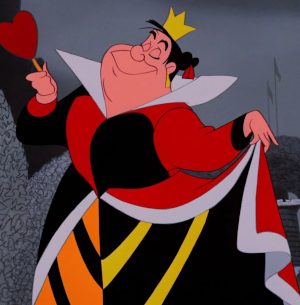

In what concerns the continuous evaluation solving exercises grade during the semester, you should submit until 23:59 of
(this exercise will still be available for submission after that deadline, but without counting towards your grade)
[to understand the context of this problem, you should read the class #04 exercise sheet]
In this problem you should submit a function as described. Inside the function do not print anything that was not asked!
The name of the .py source file you submit to Mooshak should NOT start with a digit (you will get an error if you submit it like that).

Amidst the flurry of challenges, a sudden hush fell over Wonderland. The air grew tense as the Queen of Hearts made her grand entrance, her regal demeanor commanding everyone’s attention. With a dramatic flourish of her gown and a stern expression, she declared, "I love to swap things! Cards, places, positions... swapping is the most delightful thing in all the land."Write a function swap(word) that given a string word returns a new word with the pairs of consecutive characters swapping positions. If the string has odd length, than the last character will not swap because it has no pair
The following limits are guaranteed in all the test cases that will be given to your program:
| 1 ≤ |word| ≤ 100 | size of the input tuple |
| Example Function Calls | Example Output |
|---|---|
print(swap("python"))
print(swap("hello"))
print(swap("programming"))
|
yphtno ehllo rpgoarmmnig |
Content by Pedro Ribeiro and Bernardo Portela (DCC/FCUP), migrated from dcc.fc.up.pt/~pribeiro/aulas/ip2526/problems/ip042.html.